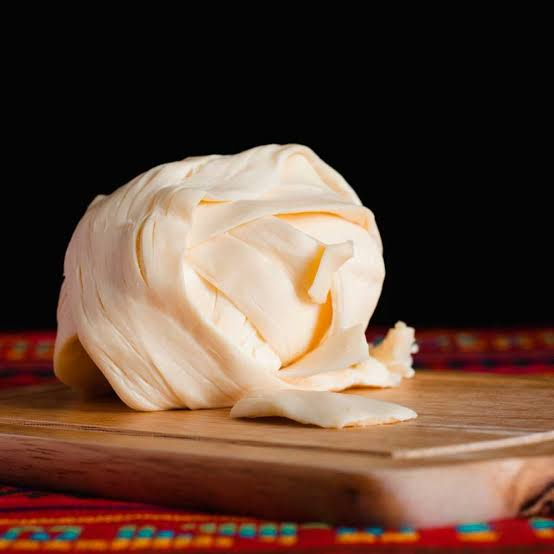

En esta página podrás ver los productos lacteos que manejamos de buena calidad y un exelente precio. Todo muy cómodamente.
Todos los productos los envíamos a puerta de tu casa sin costo de envío extra de 2 a 3 días, si tardamos mucho más, tu producto será gratis.
Productos
Queso oaxaca

El queso oaxaca está hecho 100% de leche de una excelente calidad lo tenemos por el precio de 150 el kilo(le podemos vender por gramos)
Contenido
540 gramos de queso oaxaca contine 1710 calorías, 118.8 g de grasa, 16.2 g de carbohidratos, 138.6 g de proteínas